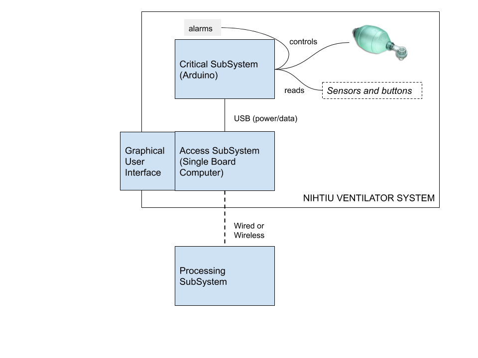

Nihtiu Architecture
Nihtiu purpose is to control a ventilator type of medical equipment.

For this control, Nihtui is defined as a three-level computing system:
- Critical SubSystem (CS)
- Access SubSystem (AS)
- Processing SubSystem (PS)
Critical SubSystem (CS)
The CS is hosted in an Arduino based Microcontroled computing machine.
This machine:
- Executes all the critical procedures that keep the machine
working without interruption.
- Query sensors and other physical devices that provide the
needed information for the machine to work and to react to
certain irregular events.
- Moves the physical parts that provide the artificial breathing
to the patient.
Access SubSystem (AS)
This machine:
- offers the user interface for the medical professional to check
and to control the system.
- collects telemetry information about operations and real time
data concerning to the patient the machine is helping to breath.
- offers an external API for other systems to obtain the telemetry
data and to send remote commands to the system.
Processing SubSystem (PS)
This machine:
- Acquires the data from one or more AS devices and process
it to perform several -non-critical- functions.
- Could be used to send commands to the AS devices, for them
to communicate orderly with their corresponding CS ones to
perform specific tasks.